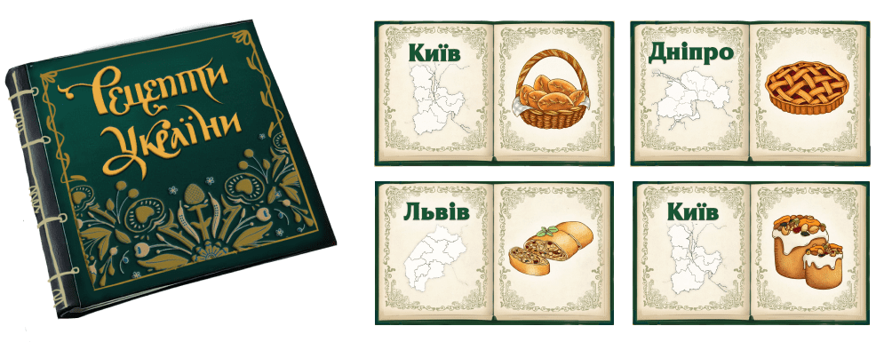

хуторок
Україна живе в традиціях.
У кожного міста своя особлива випічка,
але борошно завжди одне. І це хуторок
Завдання:
нам потрібно було створити затишну та святкову історію на
Великдень та показати, що ідеальна випічка — це завжди про
ідеальне борошно.
Ролик спочатку не передбачав акторів і складного знімального
процесу, тому ми вирішили створити магічну книгу українських
рецептів.
Створили ілюстрації,
а потім декорували та надрукували саму книгу, випічка в якій оживала та з’являлася на столі.
Підсумок — ароматний ролик, який на 100 % виконав своє завдання та став нашим першим досвідом фудзйомки під ключ.